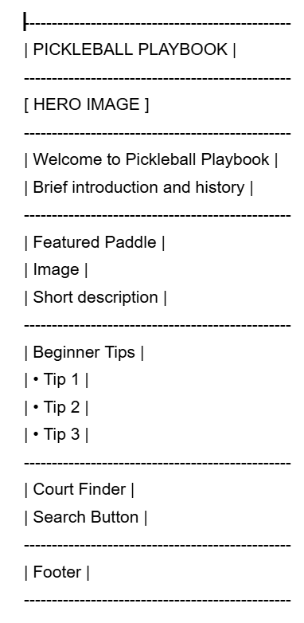
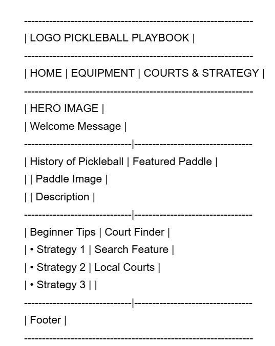

Site Name
Pickleball Playbook
This name was selected because the website serves as a guide for pickleball players looking to learn about paddles, equipment, strategies, court locations, and the history of the sport. The name "Playbook" represents improving and learning the game.
Site Purpose
Pickleball Playbook is designed to help both new and experienced pickleball players learn more about the sport. The website will provide information about paddle generations, paddle shapes, balls, playing strategies, the history of pickleball, and local court locations. The site will help players choose equipment, improve their skills, and find places to play.
Scenarios
- What type of pickleball paddle is best for my playing style?
- What are the differences between Gen 1, Gen 2, Gen 3, and Gen 4 paddles?
- Where can I find pickleball courts near me?
- What strategies can help me become a better doubles player?
Color Scheme
Primary Color: #2E8B57 (Sea Green)
Used for navigation, headings, buttons, and primary accents.
Secondary Color: #F4B400 (Golden Yellow)
Used for highlights, links, featured content, and call-to-action elements.
Background Color: #F5F5F5 (Light Gray)
Used for page backgrounds and content sections.
Typography
Roboto will be used throughout the website for headings, navigation, and body text. It was selected because it is clean, modern, highly readable, and works well across desktop and mobile devices.
Wireframes
Mobile View

Desktop View

These wireframes demonstrate the planned layout of the Pickleball Playbook homepage on both mobile and desktop devices.